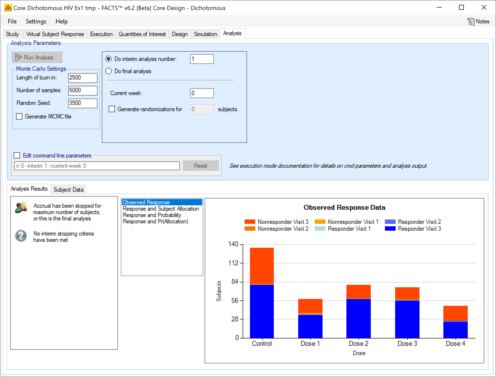

Dichotomous Endpoints
Description of how to specify the virtual subject response for dichotomous endpoints.
FACTS Core Designs
Dichotomous: Study, Virtual Subject Response, Execution, Simulation and Analysis tabs and Output file contents.
1 Virtual Subject Response
As with all FACTS design engines the Virtual Subject Response tab allows the user to explicitly define virtual subject response profiles, and/or to import virtual externally simulated patient responses – e.g. from a PK/PD model. When simulations are executed, they will be executed for a specific scenario – where a scenario is a combination of one of each type of profile – dose response, longitudinal, accrual and dropout. If an external file is used to specify the subject responses to be simulated, this effectively replaces the dose response and longitudinal profiles in a scenario.
In FACTS Core with a dichotomous endpoint there are 4 different circumstances:
Explicit specification of a dichotomous endpoint
Explicit specification of a restricted Markov endpoint
Explicit specification of a continuous endpoint that is dichotomized into responder / non-responder based on the response at the final visit.
Importation of an externally generated set of simulated subject results.
1.1 Explicitly Defined VSR
With a conventional dichotomous response being simulated, FACTS allows subject responses to be simulated by specifying the response rate to simulate.
1.1.1 Dose Response

Dose response profiles can be added and deleted, and for each profile the user specifies:
The response rate for each treatment arm.
A check box that allows the user to specify whether a specific arm “should succeed” in that scenario: so that FACTS can report on the proportion of simulations that were successful and a ‘good’ treatment arm selected.
The graph on the tab shows the mean response rate specified and the target.
If a 2D treatment arm model is being used, the doses are listed in “effective dose strength order” as was defined on the treatment arm tab.
1.1.1.1 Load Scenario Rates From File
If the “Load scenario means from a file” option is selected then in scenarios using this profile the simulations will use a range of dose responses. Each individual simulation uses one set of response rates from the supplied file, each row being used in an equal number of simulations. The summary results are thus averaged over all the VSRs in the file. The use of this form of simulation is somewhat different from simulations using a single rate or single external virtual subject response file. When all the simulations are simulated from one ‘truth’ then the purpose of the simulations is to analyse the performance of the design under that specific circumstance. When the simulations are based on a range of ‘truths’ then the summary results show the expected probability of the different outcomes for the trial over that range of possible circumstances. Note that to give different VSRs different weights of expectation, the more likely VSRs should be repeated within the file.

After selecting the “.mvsr” file the graph shows the individual response rates and the mean response rate over all the VSRs.
There is a check box per dose that allows the user to specify whether a specific arm “should succeed” in that scenario: so that FACTS can report on the proportion of simulations that were successful and a ‘good’ treatment arm selected.
The format of the “.mvsr” file is a simple CSV text file. Lines starting with a ‘#’ character are ignored so the file can include comment and header lines. There must be one column per treatment arm, and they must be in dose index order. Each value is the underlying response rate to simulate. E.g.:
#Cntrl, D1, D2, D3, D4
0.05, 0.1, 0.15, 0.25, 0.5
0.05, 0.1, 0.15, 0.23, 0.45
0.05, 0.1, 0.15, 0.21, 0.4
0.05, 0.1, 0.15, 0.19, 0.35
0.05, 0.1, 0.15, 0.17, 0.3
0.05, 0.1, 0.15, 0.15, 0.25If restricted Markov is being used then there must be two sets of columns, the first giving the overall response rate and the second giving the overall failure rate. Say the failure rate will be 0.1 for all doses then the above becomes:
#Cntrl, 1mg, 5mg, 10mg, 25mg, 50mg, 100mg, Cntrl, 1mg, 5mg, 10mg, 25mg,
50mg, 100mg
0.2, 0.2, 0.2, 0.2, 0.2, 0.2, 0.2, 0.1, 0.1, 0.1, 0.1, 0.1, 0.1, 0.1
0.2, 0.2, 0.2, 0.17, 0.15, 0.12, 0.1, 0.1, 0.1, 0.1, 0.1, 0.1, 0.1, 0.1
0.2, 0.21, 0.22, 0.23, 0.25, 0.27, 0.28, 0.1, 0.1, 0.1, 0.1, 0.1, 0.1,
0.1
0.2, 0.22, 0.22, 0.27, 0.3, 0.32, 0.35, 0.1, 0.1, 0.1, 0.1, 0.1, 0.1,
0.1
0.2, 0.22, 0.24, 0.28, 0.35, 0.4, 0.4, 0.1, 0.1, 0.1, 0.1, 0.1, 0.1, 0.1
0.2, 0.22, 0.25, 0.35, 0.4, 0.35, 0.3, 0.1, 0.1, 0.1, 0.1, 0.1, 0.1, 0.1
0.2, 0.3, 0.4, 0.35, 0.3, 0.2, 0.15, 0.1, 0.1, 0.1, 0.1, 0.1, 0.1, 0.1If a dichotomized continuous endpoint is being used then there must be two sets of columns, the first giving the mean change from baseline and the second giving the SD of the change (as in FACTS Core Continuous). For example with control and 3 doses, and where the SD will be 5 for all doses in all VSRs:
#Means SDs
#Cntrl, D1, D2, D3, Cntrl, D1, D2, D3
-1, -1, -1, -1, 5, 5, 5, 5
-1, -1.2, -1.4, -1.6, 5, 5, 5, 5
-1, -1.8, -2.5, -2.5, 5, 5, 5, 5
-1, -2, -2.5, -3, 5, 5, 5, 5
-1, -2.5, -3.25, -3.25, 5, 5, 5, 5
-1, -2.5, -3.25, -2.5, 5, 5, 5, 51.1.2 Longitudinal Simulation
1.1.2.1 Default Dichotomous Longitudinal Simulation Method
The tab for defining dichotomous longitudinal response profiles allows the user to specify the overall transition probabilities between responder and non-responder.
If no special longitudinal options are selected on the Study Info page, then this default simulation method that uses transition probabilities to simulate sequential dichotomous endpoints is used.
The transition probabilities method for generating longitudinal responses simulates the response observed at each visit by using the probability that a subject becomes or remains a ‘1’ from one visit to the next – and all subjects start with a response of 0.

The user specifies for each visit,
the probability of a subject whose response was a ‘0’ at the previous visit having a response of ‘1’ at this visit
the probability of a subject whose response was a ‘1’ at the previous visit having a response of ‘1’ at this visit
However, these probabilities imply a particular probability that a subject has a response of ‘1’ at the final visit, so they need to be modified for each arm in each dose response profile to give the desired final probability of response. This is done by numerically determining for each final response rate, a single value which when added to all the specified transition probabilities in the log-odds space yield the desired probability of final response.
Let \(Q_{td}\) be the probability of transitioning from 0 to 1, and \(R_{td}\) be the probability of transitioning from 1 to 1 for each visit (t) and dose (d).
For the 1st visit:
\[P\left( y_{1d} = 1 \right) = Q_{1d}\]
which is like considering the imaginary 0th visit to have been a non-response. For subsequent visits:
\[P\left( y_{td} = 1 \middle| y_{t - 1,d} = 0 \right) = Q_{td}\]
\[P\left( y_{td} = 1 \middle| y_{t - 1,d} = 1 \right) = R_{td}\]
The dose response (\(P_{d}\)) is first specified in the VSR > Explicitly Defined > Dose Response tab, and then longitudinal components (\(q_{t}\) and \(r_{t}\)) are specified separately. FACTS then makes an adjustment to the longitudinal components \(q_{t}\) and \(r_{t}\) to calculate \(Q_{td}\) and \(R_{td}\) for each dose while maintaining the value for \(P_{d}\) specified in the Dose Response tab.
The matrices Q and R are calculated by applying offsets \(f_{d}\) in log odds space to the longitudinal values:
\(Q_{t,d} = \frac{e^{q'_{td}}}{1 + e^{q'_{td}}}\), \(q'_{td} = \ln\left( \frac{q_{t}}{1 + q_{t}} \right) + f_{d}\),
\(R_{t,d} = \frac{e^{r'_{td}}}{1 + e^{r'_{td}}}\), \(r'_{td} = \ln\left( \frac{r_{t}}{1 + r_{t}} \right) + f_{d}\)
where \(f_{d}\) is calculated iteratively for each dose to ensure that Q and R give the correct final probability of response for each dose. As a result,
\[P_{d} = x_{Td}\]
where
\[x_{1d} = Q_{1d}\]
and
\[x_{t} = x_{t - 1}R_{td} + \left( 1 - x_{t - 1} \right)Q_{td}\]
Example:
With 3 visits and probabilities of \(0\rightarrow 1\) of \(0.2\) and of \(1\rightarrow 1\) of \(0.9\) at each visit, the probability of a final response is 0.438. This 0.438 is fixed, and cannot be changed without changing the transition probabilities.
| Transition probabilities | |||
|---|---|---|---|
| Response | Visit 1 | Visit 2 | Visit 3 |
| 0 | 0.2 | 0.2 | 0.2 |
| 1 | - | 0.9 | 0.9 |
| Pr(Response) | |||
| Response | Visit 1 | Visit 2 | Visit 3 |
| 0 | 0.8 | 0.66 | 0.562 |
| 1 | 0.2 | 0.34 | 0.438 |
If a response profile calls for the probability of a final response to be simulated with a probability of 0.8, a fixed offset in log-odds is found which when applied to all the transition probabilities results in the desired final probability of a response. Replicating this by hand to an accuracy of 4 significant digits yields an offset of 1.173, which gives:
| Transition probabilities | |||
|---|---|---|---|
| Response | Visit 1 | Visit 2 | Visit 3 |
| 0 | 0.4469 | 0.4469 | 0.4469 |
| 1 | - | 0.9668 | 0.9668 |
| Pr(Response) | |||
| Response | Visit 1 | Visit 2 | Visit 3 |
| 0 | 0.5531 | 0.3208 | 0.2000 |
| 1 | 0.4469 | 0.6792 | 0.8000 |
1.1.2.2 Restricted Markov Dose Response
If on the Study > Study Info tab, the special longitudinal option of using the restricted Markov is selected then this tab is available for specifying jointly how subject interim and final outcomes are to be simulated:
Unlike the simulation of the conventional dichotomous outcome, with Restricted Markov the longitudinal and final response are specified together.
The Absorbing Markov Chain model assumes at each visit patients are in one of three states – responder, stable disease, or failure (non-responder). The responder and failure states are assumed to be absorbing, so patients entering one of these states remain in those states for the duration of the study. Thus, all patient profiles will consist of some duration of stable disease followed by a permanent transition to responder or failure. If a subject remains in the stable state through their final endpoint time, the final response is made dichotomous by the user specifying whether patients in the stable state at the final visit should be classified as responders or failures.
For each dose the user specifies the probability that the subject will be a failure at their final endpoint, and the probability that a subject will be a responder at their final visit. Given these probabilities, FACTS can calculate the probability that a subjects is in the stable state at their final visit, and then the mechanism for generating subjects longitudinal data is:
Two independent exponentially distributed variables, one measuring the time until response \(T_{R}\) and another measuring the time until failure \(T_{F}\), are simulated when the subject enters the study.
If either of variable has a value less than the final endpoint time, the engine determines which variable (\(T_{R}\) or \(T_{F}\)) is the minimum. All visits whose time occurs less than that minimum are stable, while all visits past that variable’s time are classified as that variable’s corresponding state (thus, if visits occur every week for 10 weeks, the response variable \(T_{R}\) is 4.5, and the failure variable \(T_{F}\) is 9.5, then the response variable is the minimum, visits 1-4 are stable, and visits 5-10 are a response.
If neither variable is less than the final endpoint time, the final endpoint and all visits are assumed to be stable.
The parameters of the exponential variables are determined so that they agree with the user entries for the probabilities of response, stable, and failure at the final endpoint. Given T is the time of the final endpoint and a particular dose has probability for response, stable, and failure of Pr(resp), Pr(stable), and Pr(fail) with Pr(stable) strictly between 0 and 1, the appropriate exponential parameters (again there are separate rates in each group and arm) are
\[\lambda_{r} = \frac{\Pr(resp)\left\lbrack - \ln{Pr(stable)} \right\rbrack}{T\left( 1 - Pr(stable) \right)}\] \[\lambda_{f} = \frac{\Pr(fail)\left\lbrack - \ln{Pr(stable)} \right\rbrack}{T\left( 1 - Pr(stable) \right)}\]
If one of these rates is 0, that random variable is removed from the calculation (e.g. if Pr(fail)=0 then failures are not generated). If Pr(stable)=0, the transition to response or failure is assumed to occur instantaneously after enrolment, and thus a weighted coin is flipped with probabilities Pr(resp) and Pr(fail) and all visits are equal to the result (e.g. all visits are responses or all visits are failures depending on the result of that weighted coin flip). If Pr(stable)=1, then all visits are stable.
There is a check box per dose that allows the user to specify whether a specific arm “should succeed” in that scenario so that FACTS can report on the proportion of simulations that were successful and a ‘good’ treatment arm selected.
The graph on the Restricted Markov tab shows the probability of response for each arm and the target CSD relative to the response on control.
1.1.2.3 Dichotomized Continuous Response
If, on the Study > Study Info tab, the special longitudinal option is selected that the endpoint is a dichotomized continuous response, then instead of using the dichotomous endpoint infrastructure the continuous dose response model and longitudinal data simulation tabs are used. After the final endpoint and all intermediate endpoints are simulated from the continuous distribution, they are dichotomized using the threshold specified on the Study Info tab.
1.2 External
As well as simulating subject responses within FACTS they can be simulated externally, and imported into FACTS where the supplied responses are sampled from with replacement when simulating the trial. The selection of a file containing subject response data (which must be in the required format) can be done from the External Files sub-tab depicted below.
To import an external file, the user must first add a profile to the table. After adding the profile, the user must click “Browse” to locate the file of externally simulated data. The user will then be prompted to locate the external file on their computer with a dialog box.
1.2.1 Required Format of Externally Simulated Detail
The supplied data should be in the following format: an ascii file with data in comma separated value format with the following columns:
Patient id - these must be sequential, unique, positive integers.
Arm Index (1 = Control, 2 = Treatment1, 3 = Treatment2, …)
Visit ID – visit index (1= first visit, 2= second visit, …)
Response – 0 for no response, 1 for response, -1 for stable (restricted Markov)
Subjects need to have unique, positive integer IDs, all records for each subject should be contiguous and in visit order.
The GUI requires that the file name has a “.dat” suffix. Additionally, it is acceptable to not use column headers in the .dat input file. If column headers are included, the column header line should begin with a pound sign (#) indicating it should be ignored.
Example: 2 subjects, both assigned to the first arm, data for 6 visits :
| Dichotomous only | Restricted Markov | Continuous |
|---|---|---|
#subj id, Arm ID, Visit ID, Response 1,1,1,0 1,1,2,0 1,1,3,0 1,1,4,1 1,1,5,0 1,1,6,1 2,1,1,1 2,1,2,0 2,1,3,0 2,1,4,0 2,1,5,0 2,1,6,0 |
#subj id, Arm ID, Visit ID, Response 1,1,1,-1 1,1,2,-1 1,1,3,-1 1,1,4,-1 1,1,5,-1 1,1,6,-1 2,1,1,-1 2,1,2,0 2,1,3,0 2,1,4,0 2,1,5,0 2,1,6,0 |
#subj id, Arm ID, Visit ID, Response 1,1,1,1 1,1,2,0 1,1,3,0 1,1,4,0 1,1,5,1 1,1,6,2 2,1,1,1 2,1,2,0 2,1,3,2 2,1,4,1 2,1,5,1 2,1,6,3 |
1.2.1.1 External Directory of Files
By using the ‘Browse for directory’ option, the user can specify a response profile that comprises a directory containing a number of external response files. Like the “scenario means in a file” option, the files in this directory will be used as a single profile, looping through the different files for successive simulations. So individual simulations will use a single external file from the directory, but the summary results for the scenario will be averaged over all the files, the number of simulations being round down to the nearest multiple of the number of external files in the directory. The format of each individual file should be the same as for a single external file, above. Only files with the “.dat” suffix will be read, other files will be ignored.

1.3 Response
| Column Title | Number of columns | Description |
|---|---|---|
| Status | 1 | This column reports on the current status of simulations: Completed, Running, No Results, Out of date, Error. It is updated automatically. |
| Scenario | 1 | This column gives the name of the scenario, concatenating together the profile names from the following tabs: ‘Execution > Accrual’, ‘Execution > Dropout Rate’, ’Virtual Subject Response > Composite, This is the same name as used for the results directory |
| Mean Trt.: <Dose> | One per arm | This is the mean (over the simulations) of the estimate of the response on this dose. |
| SD Trt.: <Dose> | One per arm | This is the standard deviation (over the simulations) of the estimate of the response on this dose. |
| True Mean Resp: <Dose> | One per arm | This is the true response rate from which the simulation data was sampled. |
1.4 Model Parameters
| Column Title | Number of columns | Description |
|---|---|---|
| Scenario | 1 | This column gives the name of the scenario, concatenating together the profile names from the following tabs: ‘Execution > Accrual’, ‘Execution > Dropout Rate’, ’Virtual Subject Response > Composite, This is the same name as used for the results directory |
| Mean Longmod Resp: <Dose> <Visit> |
D*V | These are only calculated and written out if the ITP longitudinal model is being used. This is the mean (over the simulations) of the estimate of the mean response for a particular dose at a particular visit. |
| SE Mean Longmod Resp: <Dose> <Visit> |
D*V | This is the standard error (over the simulations) of the longitudinal model estimate of the response at intermediate visits (see above) |
| BAC Mean | 1 | This is the mean (over the simulations) of the posterior estimate of the mean of the Bayesian Augmented Control (Hierarchical Prior) distribution of mean control responses. |
| SD BAC Mean | 1 | This is the SD (over the simulations) of the posterior estimate of the mean of the Bayesian Augmented Control (Hierarchical Prior) distribution of mean control responses. |
| BAC Tau | 1 | This is the mean (over the simulations) of the posterior estimate of the SD of the Bayesian Augmented Control (Hierarchical Prior) distribution of mean control responses. |
| SD BAC tau | 1 | This is the SD (over the simulations) of the posterior estimate of the SD of the Bayesian Augmented Control (Hierarchical Prior) distribution of mean control responses. |
| BAAC Mean | 1 | This is the mean (over the simulations) of the posterior estimate of the mean of the Bayesian Augmented Active Comparator (Hierarchical Prior) distribution of mean active comparator responses. |
| SD BAAC Mean | 1 | This is the SD (over the simulations) of the posterior estimate of the mean of the Bayesian Augmented Active Comparator (Hierarchical Prior) distribution of mean control responses. |
| BAAC Tau | 1 | This is the mean (over the simulations) of the posterior estimate of the SD of the Bayesian Augmented Active Comparator (Hierarchical Prior) distribution of mean active comparator responses. |
| SD BAAC tau | 1 | This is the SD (over the simulations) of the posterior estimate of the SD of the Bayesian Augmented Active Comparator (Hierarchical Prior) distribution of mean active comparator responses. |
1.5 Entering the data directly
For a typical FACTS Core trial, there are normally too many subjects to want to enter the data directly, but it is possible. Also if data is first loaded from an external file, it is presented in the same grid as that used for data entry and additional data can be added or existing data modified.
The data format is the same as the ‘patientsNNNN.csv’ output file from simulations, so it is easy to use these as the basis for a trial analysis.
The first column is the Subject ID. FACTS does not use this value, it is there to allow the data to be cross-referenced to an external data source. If not required there is no harm simply entering ‘1’ on each row.
Region ID is a value output from FACTS simulation, reflecting the recruiting region the simulated subject was recruited in. It is not used in analysis, if a region ID is not available there is no harm simply entering ‘1’ for each subject.
Date is a real number indicating when the subject was recruited in weeks[^5] from the start of the trial. It is output from FACTS simulation, it is not used in analysis. If a date is not available there is no harm simply entering ‘1’ for each subject.
Dose index indicates which arm the subject was randomized to. The index of each arm is visible on the Study > Treatment Arms tab. Index ‘1’ is the Control arm if a Control is present.
Last Visit# is the index of last visit for which there is data for the subject. Previously FACTS could not process data with data missing from visits before the last visit. From FACTS 6.2 this is now possible. Visits for which no data is available should be given the value “-9999”. Data supplied for a subject’s visits after ‘Last Visit#’ is ignored.
Dropout, is a flag, value ‘0’ (not dropped out) or ‘1’ (dropped out). For s subject that has dropped out, FACTS will apply the defined value for the subject from the ‘Last Visit#’.
Baseline, this should be the subjects baseline score in Dichotomous, baseline is ignored it must always be 0.
Visit1-… these are the subjects response values at the defined visits (on the Study tab), up to and including the final visit. For a dichotomous endpoint, these values are either 0 (no response) or 1 (response).

If data is entered and then ‘Run Analysis’ clicked, the data is saved to a file called ‘patients.dat’ and the analysis results saved to a folder called ‘Analysis’ within the “_results” folder of the design.

The ‘Save As’ button can be used to save the file with a different name, but it will still be saved within the _Results folder.
A specific results folder is also created, called ‘Analysis_<file name>’.
1.6 Loading Data From a File
As well as entering the data via FACTS its possible to load the data from a ‘subject.csv’ file. These can be created within FACTS or outside of FACTS and once created can be edited FACTS or outside of FACTS.
We have tried to make it particularly easy to enter, modify and analyze data in N-CRM because this is a useful way to explore the properties of the design in addition to simulation.
1.6.1 The subject.csv file format
The file is a simple ascii file with the different data items separated by commas. Any line starting with ‘#’’ is ignored, here we use that to include a header row. The data may also include spaces to aid readability (but not, currently, tabs). Each line defines the dose given to a single subject and that subject’s response.
The format of the file is the same as the ‘patientsNNNN.csv’ output file, (Section 18.5 below) and the column values described above.
1.6.2 Converting arrival date value from days to weeks
From FACTS 7.0 the value in the Date field is interpreted as being in weeks (rather than days as in previous versions). If you have existing data, a simple conversion tool is provided “Convert Date from Days to Weeks” that simply divides all the Date values by 7. Having run it, you then need to save the modified data. The values of the Date field will only make a difference to TTE analyses.


1.7 Data file management on the Analysis tab
From FACTS 6.2 onwards FACTS now supports multiple subject data files and analysis folders.
Buttons that allow the subject data file to be changed:
’Select File to Create New Analysis: launches a file browser that allows the user to select a new “.csv” file from any location. The selected file is copied to the “_Results” folder (retaining its current name) and made the current subject data file.
‘Rename Current Analysis’ allows the name of the current subject data file to be changed.
‘Select Difference Analysis’ allows a different subject data file that is in the “_Results” folder to be made the current subject data file.
‘Delete Analysis’ allows any of the subject data files that are in the “_Results” folder to be deleted.
The name of the current subject data file and the name of the corresponding analysis folder are shown below the subject data file buttons.
There are five buttons that allow the currently loaded subject data file to be modified:
‘Delete Row’ deletes the currently selected row in the data grid. The data in the current subject file is not updated unless the current data is saved.
‘Delete All’ clears all the data in the data grid. The data in the current subject file is not updated unless the current data is saved.
‘Reload data’ replaces the data in the data grid with the data that is still in the current subject data file.
‘Save As’ saves the current data in the data grid to a new subject data file in the “_Results” folder, and makes that the current subject data file.
“Save” saves the current data in the data grid to the current subject data file.
Running an analysis performs a ‘Save’ before running the analysis.
1.8 Running an Analysis
Once data has been loaded or entered, the user can click the ‘Run Analysis’ button.
Once the analysis has run, FACTS displays the recommendation, and a graph showing the data.

1.9 Analysis Options
At the top of the analysis tab there are various parameters that can be set to control the analysis performed:

The MCMC parameters
“Burn-in” for the number of initial samples that are discarded
“Length” for the number of samples drawn to form the posterior distributions
Random number seed that can be set to generate a different sampling sequence
Whether an MCMC file is to be output (which enables the ability to view sample history graphs for the model parameters).
Edit command line parameters allows expert users to enter command line parameters to be passed to the design engine that are not settable through this panel.
It is possible to flag which, if any, doses have already been dropped and hence to be excluded from future adaptation decisions, but included in the analysis (this can be used even if the design is not an arm dropping design – to allow for an arm being dropped for reasons outside the scope of the simulation, such as logistical or safety reasons.
The user specifies which interim the analysis is for and hence which decision criteria to be applied
The user supplied the interim analysis number or
Selects “Do Final Analysis” which causes the analysis to use the final evaluation success/futility criteria.
The user specifies the current week of the trial if the amount if information defined by “opportunity to complete” is required.
If this is an arm dropping design, it is possible to flag which, if any, doses have already been dropped and hence to be excluded from future adaptation decisions, but included in the analysis [this can be used even if the design is not an arm dropping design – to allow for an arm being dropped for reasons outside the scope of the simulation, such as logistical or safety reasons but only be entering the ‘-armsdropped’ command line parameter the control is only displayed if the design includes arm dropping].
2 Detailed Simulation Results
After simulation has completed and simulation results have been loaded, the user may examine detailed results for any scenario with simulation data in the table by double-clicking on the row. A separate window (as in Figure 15‑1) displays the individual results for each simulation. This is the contents of the “simulations.csv” file, which is described below. . The simulations results are partitioned into the same various results groupings as the summary results. These can be accessed from the “right click” menu, along with opening the results folder, opening the weeks file for a particular simulation and opening the simulated patients file for a particular simulation (where a “weeks” file or a “patients” file has been output).

3 Output Files
FACTS stores the results of simulations as ‘.csv’ files under a Results folder. For each row in the simulations table, there is a folder named by the profiles that make up the scenario, which contains the corresponding ‘.csv’ files.

These files can be opened using Microsoft Excel, but versions of Excel before 2007 are restricted to 256 columns, which is too few to view some files in their entirety. The ‘Calc’ application in ‘OpenOffice’ will show all the columns (and will open two files that have the same name at the same time!). Because Excel takes out a file lock on any file it has open, while a file is open in Excel it cannot be deleted or modified by another application. The most common cause for an error to be reported when simulating trials in FACTS is because the user has one of the previous results files is still open in Excel.
In the scenario directory there are the following types of results file:
Summary.csv Contains a single row of data that summarizes the simulation results. This is the source of the shown on the simulations tab.
Summary_freq_locf.csv
Summary_freq_fail.csv
Summary_freq_ignore.csv Contains a single row of data that that summarizes the frequentist analysis of the simulations. A file is output for each of the different methods for dealing with missing data that are applicable: “fail”, LOCF and “ignore” (referred to as PP (Per-Protocol) in the GUI).
Simulations.csv Contains one row per simulation describing the final state of each simulation for every trial simulated.
Simulations_freq.csv Contains one row per simulation describing the frequentist analysis of the final state of each simulation for every trial simulated.
PatientsNNNNN.csv Contains one row per patient in a simulation, where NNNNN is the number of the simulation. By default this file is written out only for the first simulation, but this can be changed via the simulations tab.
WeeksNNNNN.csv contains one row for each cohort during a simulation where NNN is the number of the simulation. By default this file is written only for the first 100 simulations, but this can be changed on the simulation tab. The values in the last row of the cohorts file will be the same as the final values for that simulation in the simulations file.
3.1 Contents of summary.csv
The first line is a header line, starting with a ‘#’, containing the column headings.
| Column Title | Number of columns | Description |
|---|---|---|
| Project | 1 | The name of the facts file |
| Scenario | 1 | The name of the scenario |
| T imestamp | 1 | The time the simulations were run |
| Version | 1 | The version of FACTC that was used to run the simulations |
| NSim | 1 | The number of simulation run. |
| No. Subj | 1 | The mean, over the simulations, of the total number of subjects recruited in the trial. |
| SE Subj. | 1 | The standard error of the total number of subjects recruited into the trials. |
| No.Subj 80%ile | 1 | The 80th percentile, over the simulations, of the total number of subjects recruited in the trial. |
| P(ES) |
|
The proportion of simulations that stopped early for success. |
| P(LS) | 1 | The proportion of simulations that did not stop early, and were successful on final evaluation. |
| P(LF) | 1 | The proportion of simulations that did not stop early, and were futile on final evaluation. |
| P(EF) | 1 | The proportion of simulations that stopped early for futility. |
| SFFF | 1 | The proportion of simulations that stopped early for success, but at final analysis were futile (Success-Futility ‘flip-flops’). |
| FSFF | 1 | The proportion of simulations that stopped early for futility, but at final analysis were successful (Futility- Success ‘flip-flops’). |
| Undec. | 1 | The proportion of simulations that did not stop early, and met neither the success or futility final evaluation criteria and hence are counted as ‘undecided’. |
| Unused | 3 | Three unused columns for other outcome types. |
| Early Success Time | 1 | This is the mean early decision time (over the simulations stopped early for success), it is the time from the start of the trial to the interim where early success was declared. It does not include the subsequent follow up time. |
| Mean Alloc <dose> | D | The mean (over the simulations) of the number of subjects allocated to each treatment arm. |
| SE Alloc <dose> | D | The standard error (over the simulations) of the number of subjects allocated to each treatment arm. |
| Mean Resp <dose> | D | The mean of the estimates of response of each treatment arm. |
| SE Resp <dose> | D | The standard error, over the simulations, of the estimate of response of each treatment arm. |
| True Mean resp <dose> | D | The true response for each treatment arm used when sampling the simulated subject responses. |
| Mean Longmod Resp: <Dose> <Visit> |
D*V | These are only calculated and written out if the ITP longitudinal model is being used. This is the mean (over the simulations) of the estimate of the mean response for a particular dose at a particular visit. |
| SE Mean Longmod Resp: <Dose> <Visit> |
D*V | This is the standard error (over the simulations) of the longitudinal model estimate of the response at intermediate visits (see above) |
| No. Dropouts <Dose> <Visit> |
D*V | These are the mean (over the simulations) number of subjects that have dropped out on this dose at this visit. |
| BAC Mean | 1 | If a hierarchical prior for Control is being used this is the mean (over the simulations) of the posterior estimate of the mean of the Bayesian Augmented Control (Hierarchical Prior) distribution of mean control responses. |
| SE of BAC Mean | 1 | If a hierarchical prior for Control is being used this is the standard error (over the simulations) of the posterior estimate of the mean of the Bayesian Augmented Control (Hierarchical Prior) distribution of mean control responses. |
| BAC Tau | 1 | If a hierarchical prior for Control is being used this is the mean (over the simulations) of the posterior estimate of the SD of the Bayesian Augmented Control (Hierarchical Prior) distribution of mean control responses. |
| SE of BAC Tau | 1 | If a hierarchical prior for Control is being used this is the standard error (over the simulations) of the posterior estimate of the SD of the Bayesian Augmented Control (Hierarchical Prior) distribution of mean control responses. |
| BAAC Mean | 1 | If a hierarchical prior for Active Comparator is being used this is the mean (over the simulations) of the posterior estimate of the mean of the Bayesian Augmented Active Comparator (Hierarchical Prior) distribution of mean active comparator responses. |
| SE of BAAC Mean | 1 | If a hierarchical prior for Active Comparator is being used this is the standard error (over the simulations) of the posterior estimate of the mean of the Bayesian Augmented Active Comparator (Hierarchical Prior) distribution of mean control responses. |
| BAAC Tau | 1 | If a hierarchical prior for Active Comparator is being used this is the mean (over the simulations) of the posterior estimate of the SD of the Bayesian Augmented Active Comparator (Hierarchical Prior) distribution of mean active comparator responses. |
| SE of BAAC Tau | 1 | If a hierarchical prior for Active Comparator is being used this is the standard error (over the simulations) of the posterior estimate of the SD of the Bayesian Augmented Active Comparator (Hierarchical Prior) distribution of mean active comparator responses. |
| Mean Duration | 1 | The mean, over the simulations, of the overall duration of the trials, from first person first visit, to last person last visit. |
| Ppn Arms Dropped <dose> | D | The proportion of the simulations in which each arm was dropped. These will be zero if arm dropping is not selected as the means of adaptive allocation. |
| Mean LPFV time | 1 | The mean, over the simulations, of the accrual period of the trials, from first person first visit, to last person first visit (LPFV). |
| QOI Columns |
3.1.1 QOI Columns
The QOI columns depend on the QOIs that have been defined for this design. The columns in the following order:
Posterior Probabilities The summary file contains the mean (over the simulations) of the posterior probability for each dose.
Predictive Probabilities The summary file contains the mean (over the simulations) of the predictive probability for each dose.
P-Values The summary file contains the mean (over the simulations) of the p-value for each dose.
Target Probabilities The summary file contains the proportion of times (over the simulations) each dose had the greatest probability of being the target.
Decision QOIs The summary file contains the mean (over the simulations) of the final value of the decision QOI at the target.
3.2 Contents of Summary_freq_<missing>.csv
There is a frequentist summary file for each type of treatment of missing values.
The first line is a header line, starting with a ‘#’, and containing
The FACTS GUI version number
The name of the FACTS file
The name of the scenario
The time stamp of the start of the simulation
The second line is a header line, starting with a ‘#’, containing the column headings.
| Column Title | Number of columns | Description |
|---|---|---|
| Mean Theta <dose> | D | The mean response per dose. |
| SE Theta <dose> | D | The standard error of the response per dose |
| Ppn Signif | 1 | The proportion of simulations where at least one of the unadjusted p-values is less than the user specified one-sided alpha. |
| Ppn Signif <dose> | D | For each treatment arm, the proportion of simulations where the unadjusted p-value is less than the user specified one-sided alpha. The marginal probability of significance per dose (using unadjusted p-values. |
| Bias <dose> | D | The difference between the mean response and the true (simulated) response per dose |
| Coverage <dose> | D | The proportion of simulations where the unadjusted confidence interval for the response contains the true response rate used to simulate subject responses. |
| Ppn Signif Dunnett | 1 | The proportion of simulations where at least one of the Dunnett adjusted p-values is less than the user specified one-sided alpha. |
| Ppn Signif Dunnett <dose> | D | For each treatment arm, the proportion of simulations where the Dunnett adjusted p-value is less than the user specified one-sided alpha. |
| Coverage Dunnett <dose> | D | The proportion of simulations where the Dunnett adjusted confidence interval contains the true response rate used to simulate subjects responses. |
| Ppn Signif Bonf | 1 | The proportion of simulations where at least one of the Bonferroni adjusted p-values is less than the user specified one-sided alpha. |
| Ppn Signif Bonf <dose> | D | For each treatment arm, the proportion of simulations where the Bonferroni adjusted p-value is less than the user specified one-sided alpha. |
| Coverage Bonf <dose> | D | The proportion of simulations where the Bonferroni adjusted confidence interval contains the true response rate used to simulate subjects responses. |
| Ppn Signif Trend | 1 | The proportion of simulations where the trend test p-value is less than the user specified one-sided alpha. |
3.3 Contents of simulations.csv and weeksNNNNN.csv
The simulations.csv file holds the FACTS summary of the final analysis for each simulation (one per row).
The weeksNNNNN.csv file holds the FACTS summary of every analysis for the NNNNNth simulation. It contains a row for each interim in the trial and a roe for the final analysis (Interim number 999). The final analysis occurs after all the planned data is collected.
If the trial does not stop early this will be after all full follow-up for all subjects,
if the trial does stop early this will be either
an analysis after full follow-up of the subjects recruited up to the point of the interim when the stopping decision was taken (If the “continue follow-up” option has been selected by the user on the Interims tab)
or it will perform a repeat the analysis using the data available at the interim when the stopping decision was taken – the results will vary from those of the interim within MCMC sampling error. (This “unnecessary” analysis is included to keep the content of the weeks files consistent and hence simplify the post processing of “weeks” files).
The first line is a header line, starting with a ‘#’, and containing
The FACTS GUI version number
The name of the FACTS file
The name of the scenario
The time stamp of the start of the simulation
The second line is a header line, starting with a ‘#’, containing the column headings.
Most of the columns are common to the two file types, but the weeks file does not contain columns for the ‘final’ values of the evaluation criteria.
| Column Title | Nu mber of col umns | In s imula tions file | In w ee ks fi le | Description |
|---|---|---|---|---|
| # Weeks (Duration) | 1 | ✔ | The week of the analysis | |
| #Sim | 1 | ✔ | The number of the simulation. | |
| LastInterim | 1 | ✔ | The index of the last interim performed the index of the interim immediately before the final interim (index ‘999’). Note this is not necessarily the interim when the trial stopped if the design includes follow-up after stopping. | |
| #Subjects | 1 | ✔ | ✔ | The number of subjects recruited in the simulation. |
| Outcome | 1 | ✔ | ✔ | A flag categorizing final study outcome:
|
| Early Success Time | 1 | ✔ | ✔ | This is the time to the early success decision (-9999 if there was no early success decision). The from the start of the trial to the interim where the early success conditions were first met. It does not include the subsequent follow up time. |
| Alloc <dose> | D | ✔ | ✔ | The number of subjects allocated to each arm. |
| Pr(Alloc) <dose> | D | ✔ | ✔ | The probability of allocation to the different arms following the interim. |
| Mean resp <dose> | D | ✔ | ✔ | The estimated response of each treatment arm. |
| SD resp <dose> | D | ✔ | ✔ | The standard deviation of the estimate of response of each treatment arm. |
| Mean resp (lower CI) <dose> | D | ✔ | ✔ | The lower bound of the 95% Credible Interval of the estimate of response for each treatment arm. |
| Mean resp (upper CI) <dose> | D | ✔ | ✔ | The upper bound of the 95% Credible Interval of the estimate of response for each treatment arm. |
| True Mean resp <dose> | D | ✔ | ✔ | The true mean response of each treatment arm for this simulation. |
| Mean Raw Response <dose> | D | ✔ | ✔ | The observed rate of response on each treatment arm (unadjusted by any modeling). |
| Complete <dose> | D | ✔ | ✔ | The number of completed subjects on each treatment arm at the time of the analysis. |
| Complete Information <dose> | ||||
| #Dropouts <dose> <visit> | D * V | ✔ | ✔ | The number of subjects dropped out on each treatment arm and each visit. |
| DR Param <param> | 4 | ✔ | ✔ | The estimate of the mean value of each of the response model parameters. The response models require up to 4 parameters, some less. The model parameters are labeled α1, α2, .. the subscripts corresponding to the column their value appears in here. |
| Sd DR Param <param> | 4 | ✔ | ✔ | The standard deviation of the estimate of the mean value of the corresponding response model parameter. |
| Longmod_ <model> < parameter> <visit> | LM * LMP * V | ✔ | ✔ | The estimate of the mean value of each of the longitudinal model parameters. The number of models depends on the number of “model instances” the user has specified. Each value is reported per visit unless otherwise stated. For Beta-Binomial the parameters reported are:
For logistic regression the parameters reported are:
For restricted Markov the parameters reported are:
(values are for the transition to the next visit, so thre are no values for the final visit) If using a dichotomized continuous response, these columns will be for the selected continuous longitudinal model: For linear regression the parameters reported are:
For ITP the parameters are:
For LOCF & Kernel Density there are no estimated parameters. |
| Longmod Resp: <Dose> <Visit> | D * V | ✔ | ✔ | These are only calculated and written out if the ITP longitudinal model is being used for a dichotomized continuous endpoint. This is the mean response for a particular dose at a particular visit. |
| BAC Mean | 1 | ✔ | ✔ | This is the posterior estimate of the mean of the Bayesian Augmented Control (Hierarchical Prior) distribution of mean control responses. |
| BAC Mean SD | 1 | ✔ | ✔ | This is the SD of the posterior estimate of the mean of the Bayesian Augmented Control (Hierarchical Prior) distribution of mean control responses. |
| BAC Tau | 1 | ✔ | ✔ | This is the posterior estimate of the SD of the Bayesian Augmented Control (Hierarchical Prior) distribution of mean control responses. |
| BAC Tau SD | 1 | ✔ | ✔ | This is the SD of the posterior estimate of the SD of the Bayesian Augmented Control (Hierarchical Prior) distribution of mean control responses. |
| BAAC Mean | 1 | ✔ | ✔ | This is the posterior estimate of the mean of the Bayesian Augmented Active Comparator (Hierarchical Prior) distribution of mean active comparator responses. |
| BAAC Mean SD | 1 | ✔ | ✔ | This is the SD of the posterior estimate of the mean of the Bayesian Augmented Active Comparator (Hierarchical Prior) distribution of mean comparator responses. |
| BAAC Tau | 1 | ✔ | ✔ | This is the posterior estimate of the SD of the Bayesian Augmented Active Comparator (Hierarchical Prior) distribution of mean active comparator responses. |
| BAAC Tau SD | 1 | ✔ | ✔ | This is the SD of the posterior estimate of the SD of the Bayesian Augmented Active Comparator (Hierarchical Prior) distribution of mean active comparator responses. |
| Duration | 1 | ✔ | ✔ | The time in weeks to the analysis shown. |
| Arm Drop Time <dose> | D | ✔ | ✔ | For each treatment arm, the time in weeks when it was decided to drop the arm. |
| LPFV | 1 | ✔ | ✔ | The time in weeks to the last patient first visit. |
| QOI Columns |
3.3.1 QOI Columns
The QOI columns depend on the QOIs that have been defined for this design. The columns are grouped in the following order:
Posterior Probabilities The posterior probability for each QOI for each dose.
Predictive Probabilities The predictive probability for each QOI for each dose.
P-Values The p-value for each QOI for each dose.
Target Probabilities The probability of being the target for each QOI for each dose.
Decision QOIs The value of the decision QOI at the target.
Success
Futile A flag for each QOI decision criteria indicating if the decision QOI was evaluated and compared to a threshold at the interim (weeks file) or final analysis (simulation file). The flag value is -1 if the decision QOI was not evaluated, 0 if it did not meet the threshold and 1 if it did.
Success / Futile Combined A flag indicating if the interim or final analysis determined success or futility taking all the factors defined for Success/Futility into account: 0 if the conditions were not met, 1 it the conditions were met. If success and futility conditions have been defined that are not mutually exclusive and both sets of combined conditions are met, FACTS will pick one of the outcomes as met but not the other. In order to discourage defining Success and Futility rules that can both be true FACTS does not guarantee which outcome will be selected.
3.4 Contents of Simulations_freq_<missing>.csv, Weeks_freq_<missing>.csv
These file contain the frequentist results after an interim analysis (weeks file) or final analysis (simulations file), apart for the first column, the columns are the same in the two types of file, and the same across the different methods for treating missing data.
| Column Title | Number of columns | Description |
|---|---|---|
| # Trial | 1 | The number of the simulation. (simulations_freq_...csv only) |
| #Weeks | 1 | The week of the interim (weeks_freq_...csv only) |
| Theta <dose> | D | Unadjusted estimate of response per treatment arm |
| Theta SD <dose> | D | The SD of the estimate of response per treatment arm |
| Trt Effect <dose> | D | The relative size of the treatment effect compared to control per arm (treatment effect for control is always 0). The direction of the comparison takes into account whether a response represents a subject’s condition improving or worsening, so that a positive treatment effect shows the response on the dose is better than on control. |
| t-Stat <dose> | D | The test statistic per treatment arm (for control this is always 0) |
| p-Value <dose> | D | The unadjusted test statistic p-value per arm (for control this is always 0) |
| lower CI <dose> | D | The unadjusted lower bound of the alpha confidence interval of the estimated treatment effect per treatment arm (for control this is always 0). |
| upper CI <dose> | D | The unadjusted upper bound of the alpha confidence interval of the estimated treatment effect per treatment arm (for control this is always 0). |
| Min p-Value | 1 | The smallest of the test statistic p-values |
| p-Value Dunnett <dose> | D | The Dunnett adjusted test statistic p-value per arm (for control this is always 0). |
| lower CI Dunnett <dose> | D | The Dunnett adjusted lower bound of the alpha confidence interval of the estimated treatment effect (for control this is always 0). |
| upper CI Dunnett <dose> | D | The Dunnett adjusted upper bound of the alpha confidence interval of the estimated treatment effect (for control this is always 0). |
| Min p-Value Dunnett | 1 | The smallest of the Dunnett adjusted p-values. |
| p-Value Bonf <dose> | D | The Bonferroni adjusted test statistic p-value per arm. |
| lower-CI Bonf <dose> | D | The Bonferroni adjusted lower bound of the alpha confidence interval of the estimated treatment effect (for control this is always 0). |
| upper-CI Bonf <dose> | D | The Bonferroni adjusted upper bound of the alpha confidence interval of the estimated treatment effect (for control this is always 0). |
| Min p-Value Bonf | 1 | The smallest of the Bonferroni adjusted test statistic value per arm. |
| t-Stat trend | 1 | The t statistic from the trend test. |
| p-Value trend | 1 | The p-value from the trend test. |
3.5 Contents of PatientsNNNNN.csv
| Column Title | Number of columns | Description |
|---|---|---|
| #Subject | 1 | The subject id number, starting at 1. |
| Region | 1 | Which region the subject was recruited in |
| Date | 1 | The date, in weeks from the start of the trial, of the subject’s baseline visit and randomization. |
| Dose | 1 | The index number (1, …) of the treatment arm the subject belongs to. |
| LastVisit# | The index of the last visit for which the subjects data was collected, if the subject did not complete this could be because the subject dropped-out, the subject’s treatment arm was dropped (and there was no follow-up) or the study stopped early (and there was no follow-up). | |
| Baseline | 1 | -9999 there is no baseline for subjects in a dichotomous response trial. |
| Visit <visit> | V | Subjects response at each visit |
3.6 Contents of MCMCNNNNN.csv
The MCMC file if requested for output by the user, contains all the MCMC samples for the fitted parameters in the design. There is one row per sample (including the burnin) and the samples from all the analyses in the simulation are included. The first two columns are the analysis index and the sample (within analysis) index. The remaining columns are the parameters whose sample values are being reported, the number and constituents of these columns are highly variable depending on design of the statistical analysis.
3.6.1 Content if using a conventional Dichotomous endpoint
| Column Title | Number of columns | Description |
|---|---|---|
| Analysis | 1 | The index of the analysis (interim) in the simulation |
| Sample | 1 | The index of the sample within the analysis |
| Pi <dose> | D | The estimate of the response rate for each dose, based on the dose response model fitted |
| A <1-8> / Tau | P | If the dose response model estimates parameters then the samples of these are listed next. The number and name of the parameters will vary depending on the model being fitted. Check the Design > Dose Response tab for a listing of the parameters. |
| Longmod <model> <param> <visit> | L * P * V | If the analysis includes longitudinal modelling then the samples of the parameters of the longitudinal models are output. The number of models depends on the number of different longitudinal fits the user has specified (one over all arms, one for control and one for all treatment arms, model all arms separately, etc.), the number of parameters the model has, and if these are fitted per visit (which depends on the model being fitted), then the number of visits. |
3.6.2 Contents if using a Restricted Markov endpoint
| Column Title | Number of columns | Description |
|---|---|---|
| Analysis | 1 | The index of the analysis (interim) in the simulation |
| Sample | 1 | The index of the sample within the analysis |
| Pi <Dose> | D | The estimate of the response rate for each dose, based on the dose response model fitted |
| A <1-8> / Tau | P | If the dose response model estimates parameters then the samples of these are listed next. The number and name of the parameters will vary depending on the model being fitted. Check the Design > Dose Response tab for a listing of the parameters. |
| Longmod <model> <param> <visit> | L * P * V | Currently the values of Alpha0, Alpha1, AlphaS (the parameters to the Dirichlet distribution) are (unnecessarily – these values are not sampled) output, along with the values for P0, P1 and PS the transition probabilities of each model at each visit. |
3.6.3 Contents if using a Dichotomized Continuous variable
These are the same as for the Dichotomous endpoint, but the LM parameters are for the LM of the continuous response value.